La plateforme GoPaaS intègre un atelier génie logiciel permettant à une entreprise de développer facilement et rapidement une solution métier avec une architecture client léger. La simplicité des paramétrages vous permet de créer toutes solutions métiers selon vos besoins. L'AGL permet d'intégrer des modules existants et de les personnaliser. Les solutions sont modulaires et modulables.
Pour une visibilité claire, organisez vos formulaires sous forme d'onglet. Cette organisation favorise la navigation 360° des applications GoPaaS.
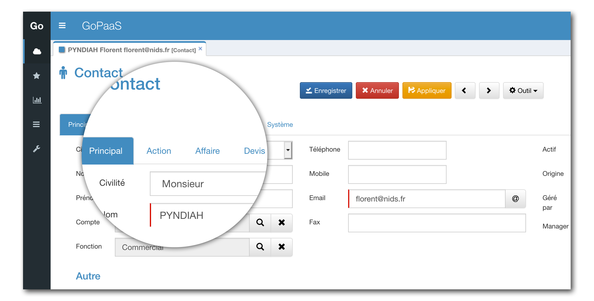Avec GoPaaS, adaptez votre applications au besoins spécifiques de votre entreprises. Quelques clics suffisent pour créer de nouvelles tables.
Avec GoPaaS, adaptez votre applications au besoins spécifiques de votre entreprises.
Quelques clics suffisent pour créer de nouvelles tables.
Ajouter, supprimez et modifier les champs de votre formulaire en parfaite souplesse et sans interrompre la disponibilité de votre application.
L'agencement type Section / Colonne vous permez de créer et gérer des formulaires
intuitifs et modernes, le tout sans utiliser une seule ligne de code.
.png)
Gérez tous les styles de données grâce à un large choix de type de champs.
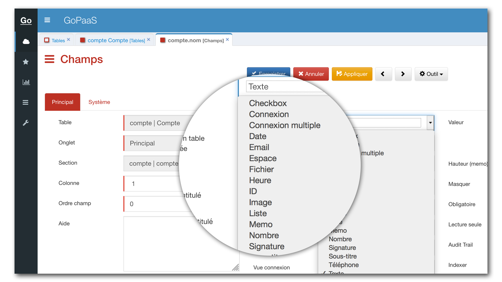Gagnez du temps dans l'organisation de vos formulaires avec le FormDesigner GoPaaS :
Toutes ces actions sont réalisées via un simple glisser déposer
Grace au FormDesigner , création et design font partie d'une seule et même étape.
Pour une visibilité claire, organisez vos formulaires sous forme d'onglet. Cette organisation favorise la navigation 360° des applications GoPaaS.
.png)
Créez des textes enrichis avec l'éditeur wysiwyg HTML intégré.
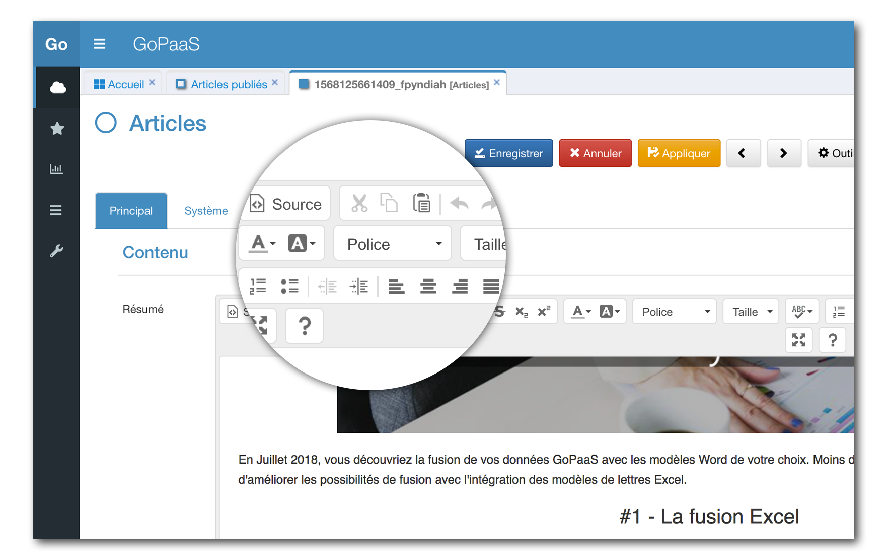Importez et Exportez rapidement vos données
Les utilisateurs concernés dispose d'une fontion d'export de données format CSV.
Utilisez le module d'import intégré pour le traitement ou l'analyse de vos données. Enregistrez et modifiez vos modèles d'imports en quelques
clcs.
Personnalisez les vues pour retrouver rapidement l'essentiel de vos informations.
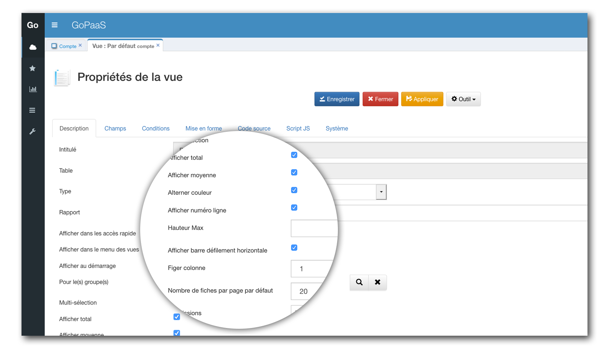Ajoutez des pièces jointes directement depuis l'application
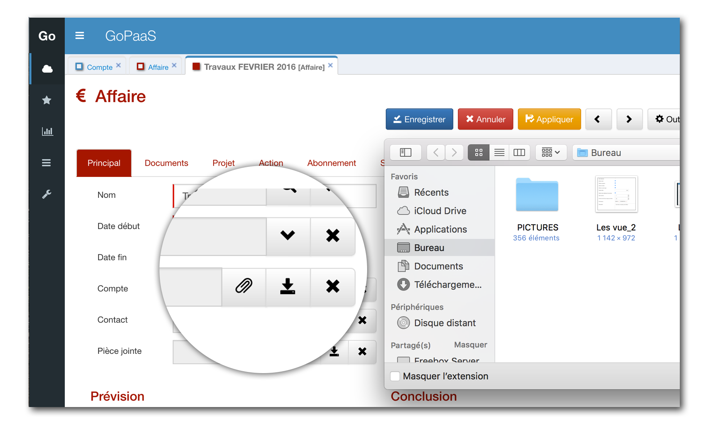Créez des textes enrichis avec l'éditeur wysiwyg HTML intégré.
.png)
Liez vos données avec plusieurs tables grâce au champ connexion et double cliquez sur la connexion pour ouvrir les fiches liées. Accédez à l'information de n'importe où.
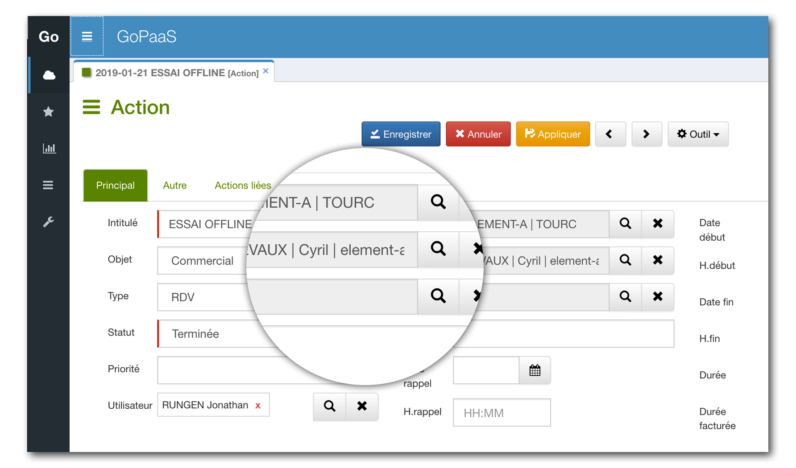Entrez du texte dans le champ URL, GoPaaS le transforme automatiquement en lien hypertext. Le champ de type email pemet des intéractions de type mail au sein de votre application
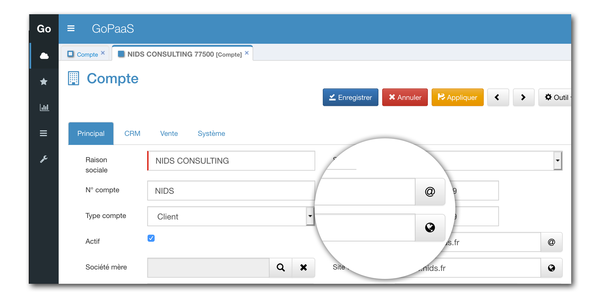Sauvegardez vos recherches avancées comme des favoris
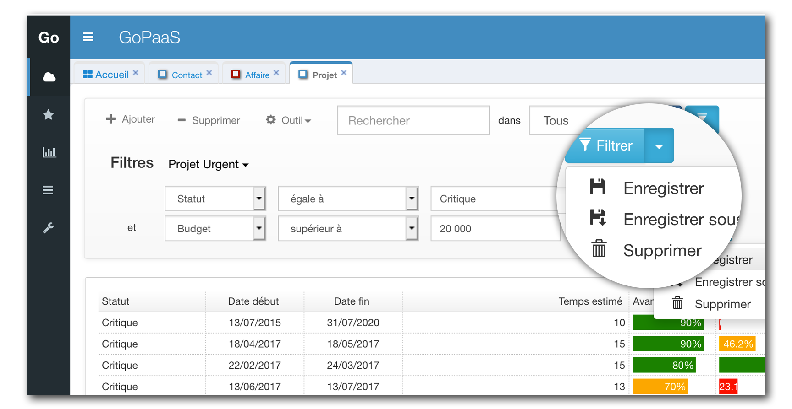Retrouvez rapidement vos informations dans la base de donnée avec notre moteur de recherche full text. Recherchez dans toutes les colonnes de la vue.
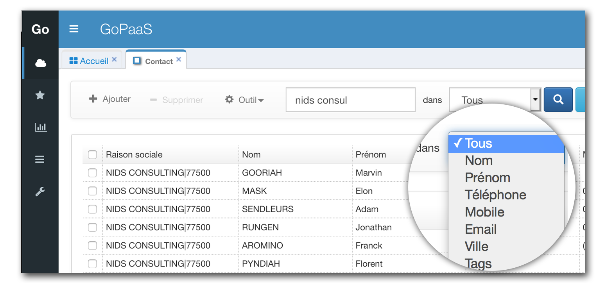Ajoutez des filtres avec l'interface utilisateur pour effectuer des recherches avancées.
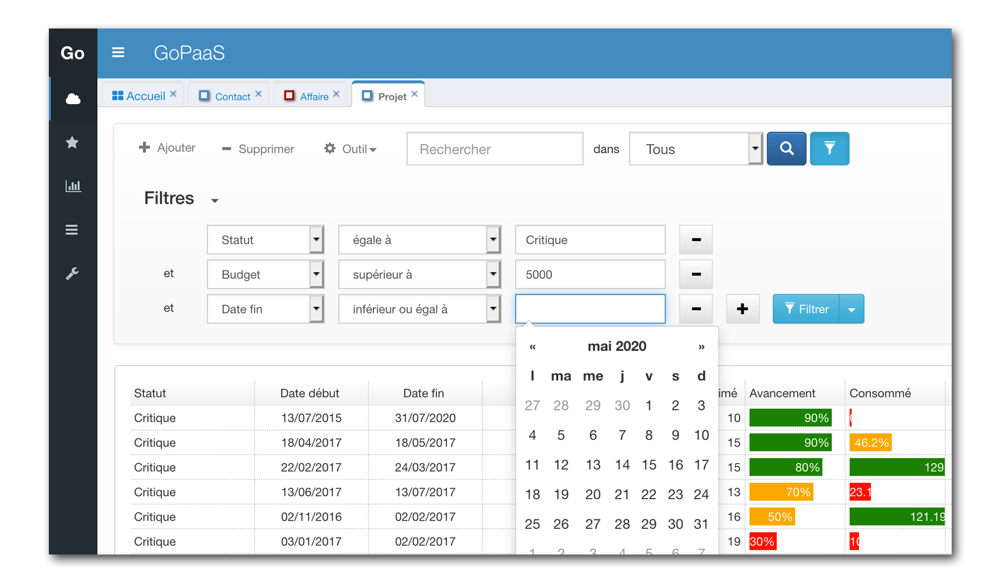Sauvegardez vos recherches avancées comme des favoris
.png)
Visualiser les données les plus importantes sous forme de tableau de bord personnalisabe, examiner la rentabilité , la productivité et l'efficacité de votre entreprise en un coup d'oeil. Cliquez simplement sur le graphique pour accéder au rapport détaillé.
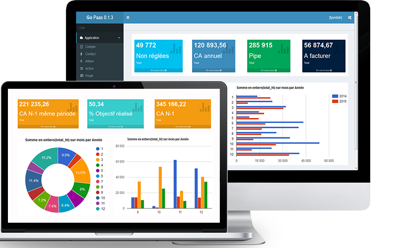Visualiser les données les plus importantes sous forme de tableau de bord personnalisabe, examiner la rentabilité , la productivité et l'efficacité de votre entreprise en un coup d'oeil. Cliquez simplement sur le graphique pour accéder au rapport détaillé.
Analysez les données les plus pertinentes avec nos graphiques robustes et agiles. Accédez à la bibliothèque complète pour personnaliser vos indicateurs.
Vous cherchez une information précise ?
Analysez les données avec la vue pivot (Tableau croisé dynamique). Ce tableau est directement exploitable sous Excel via un simple copier/coller.
Suivez , enregistrez et examinez toute activité de vos utilisateurs avec l'audit trail. Accédez également aux historiques de modification et de connexion.
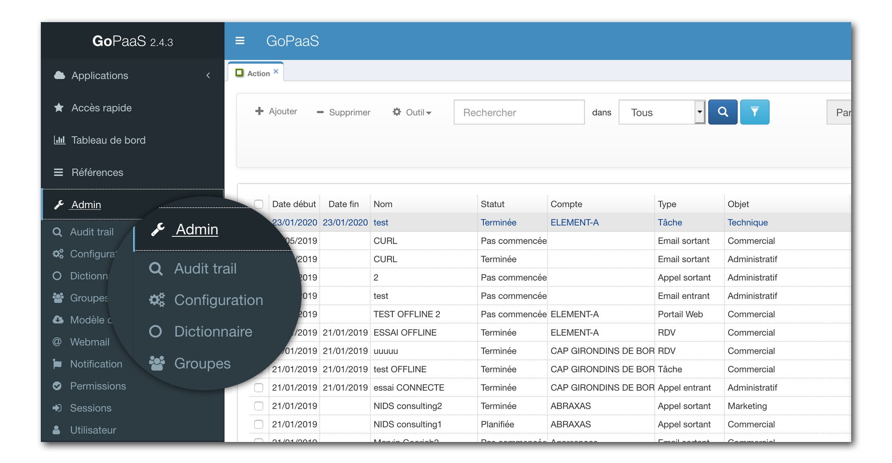Suivez , enregistrez et examinez toute activité de vos utilisateurs avec l'audit trail. Accédez également aux historiques de modification et de connexion.
Nom : Le nom de l'automatisme.
Actif : Pour activer ou pas cette fiche.
Description : Champ de saisie pour un descriptif rapide.
Ordre : C'est l'ordre dans lequel les automatismes vont s'exécuter.
Déclencheur : Cette partie va définir comment va se déclencher l'automatisme.
Type :
- Enregistrement de fiche : Va se déclencher à l'enregistrement de la fiche dans la table sélectionnée dans le champ "Table".
- Timer : Va se déclencher en fonction d'une fréquence : minutes, heures, jour ou mois. Table : Choix de la table sur laquelle nous allons établir l'automatisation.
Filtre : Permet de mettre des conditions avant d'exécuter l'automatisation.
Action : C'est l'action que l'on va déclencher : Modifier fiche, Ajouter fiche, Email, Procédure stockée ou Importer les emails
Les automatisations sont l’une des fonctionnalitées les plus puissantes de GoPaaS. Elles fonctionnent un peu comme des vigiles ou des assistants. Ce sont les automatisations qui indiqueront à GoPaaS comment accomplir automatiquement des tâches répétitives ou routinières. Il pourra s’agir tout simplement d'envoyer un mail chaque matin à 9 heures avec les taches de la journée, ou, tâche plus complexe, d’envoyer un email au commercial en charge d’un compte dont un technicien a signalé un incident important.
Grâce aux automatisations, GoPaaS peut vous rappeler vos appels téléphoniques, rendez-vous imminents et créer des fiches, en fonction des critères que vous aurez vous-même définis. Les automatisations vous permettent de totalement automatiser des tâches répétitives, de ne pas négliger certains détails, ou de vous fournir des informations au moment opportun, sans que vous ayez à les demander.
Pour créer une nouvelle automatisation rendez vous dans le menu personnalisation
.png)
> Automatisation > cliquer sur
.png)
Suivez , enregistrez et examinez toute activité de vos utilisateurs avec l'audit trail. Accédez également aux historiques de modification et de connexion.
Mode de fonctionnement des automatismes
Un automatisme est une série d’instructions que GOPAAS exécute automatiquement lorsque survient un événement particulier. Pour créer un automatisme
il faut définir un déclencheur, le nombre de conditions et d’actions consécutives sont illimitées.
Déclencheur
Evénement à partir duquel l’automatisme exécute son action. Enregistrer une fiche ou Timer.
Action
Un automatisme, une fois activé, peut accomplir un nombre illimité d’opérations consécutives : par exemple éditer une fiche ou envoyer un courrier électronique. Ces opérations s’appellent
des actions. Les automatismes les plus simples se composent d’un déclencheur et d’une action unique. Voici quelques exemples d’automatismes simples :
- A la création d’une fiche, un mail est envoyé pour avertir un responsable.
- A la création d’une facture ou un devis une fiche historique est créé automatiquement.
Condition
Les Conditions permettent de préciser davantage les circonstances dans lesquelles vos automatismes s'exécutent. Lorsqu’un déclencheur active un automatisme, l’action ou les actions
ne seront exécutées que si les conditions, dans la mesure où elles existent, sont satisfaites. Les conditions vous permettent de limiter l’exécution selon vos besoins.
Les automatismes soumis à des conditions sont un
peu plus complexes, mais ils offrent plus de souplesse. A titre d’exemple :
- Un automatisme qui se déclenche une fois par jour à 9 heures du matin et vous envoie un rappel par email pour les actions non traitées. La
condition vérifie s’il y a des actions avec le statut « Pas commencée ». S’il n’y en a pas, l’automatisme ne s’exécute pas.
- Un automatisme qui se déclenche à chaque ajout d’une note de frais et créé une action si les dépenses totales de la semaine dépassent un certain montant. La condition vérifie le montant total des dépenses de la semaine.
Transmission des données aux actions
Certaines actions, comme "Modifier fiche" utilisent des données qui leur sont transmises par le déclencheur ou les conditions et que l’on appelle les
valeurs issues du déclencheur ou de la condition.
Voici un exemple de tels automatismes :
- Un automatisme qui se déclenche lorsque vous sauvegardez une tâche qui n'a été confiée à aucun Collaborateur. L’automatisme modifie la fiche et vous assigne la tâche. Les données
sont donc fournies par le déclencheur (la tâche) à l’action qui peut ainsi agir sur elles.
Nom : Le nom de l'automatisme.
Actif : Pour activer ou pas cette fiche.
Description : Champ de saisie pour un descriptif rapide.
Ordre : C'est l'ordre dans lequel les automatismes vont s'exécuter.
Déclencheur : Cette partie va définir comment va se déclencher l'automatisme.
Type :
- Enregistrement de fiche : Va se déclencher à l'enregistrement de la fiche dans la table sélectionnée dans le champ "Table".
- Timer : Va se déclencher en fonction d'une fréquence : minutes, heures, jour ou mois. Table : Choix de la table sur laquelle nous allons établir l'automatisation.
Filtre : Permet de mettre des conditions avant d'exécuter l'automatisation.
Action : C'est l'action que l'on va déclencher : Modifier fiche, Ajouter fiche, Email, Procédure stockée ou Importer les emails
Il y a 5 types d'actions possible sur GoPaaS.
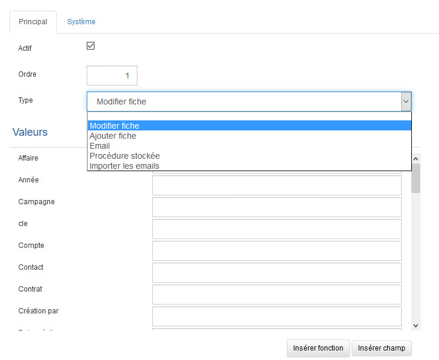1. Modifier fiche : Modifie la fiche spécifiée dans le déclencheur.
2. Ajouter fiche : Ajoute une nouvelle fiche dans une table que l'on selectionne.
3. Email : Génère l'envoi d'un email
Sur les types Modifier fiche, Ajouter fiche et Email un bouton en bas de l'écran
.png)
permet d'insérer les champs de la table déclencheur.
4. Procédure stockée : fait un appel de procédure stockée (c'est un script MySQL)
5. Importer les emails : Télécharge les mails depuis un compte email pop et créer une fiche dans la table que l'on a sélectionnée.
Sur le type Importer les emails le bouton
permet d'insérer les valeurs reçu de l'email dans la nouvelle fiche.
Concevez des règles pour automatiser les processus de gestion, publiez ces règles métier sans effort avec l'interface simplifiée.
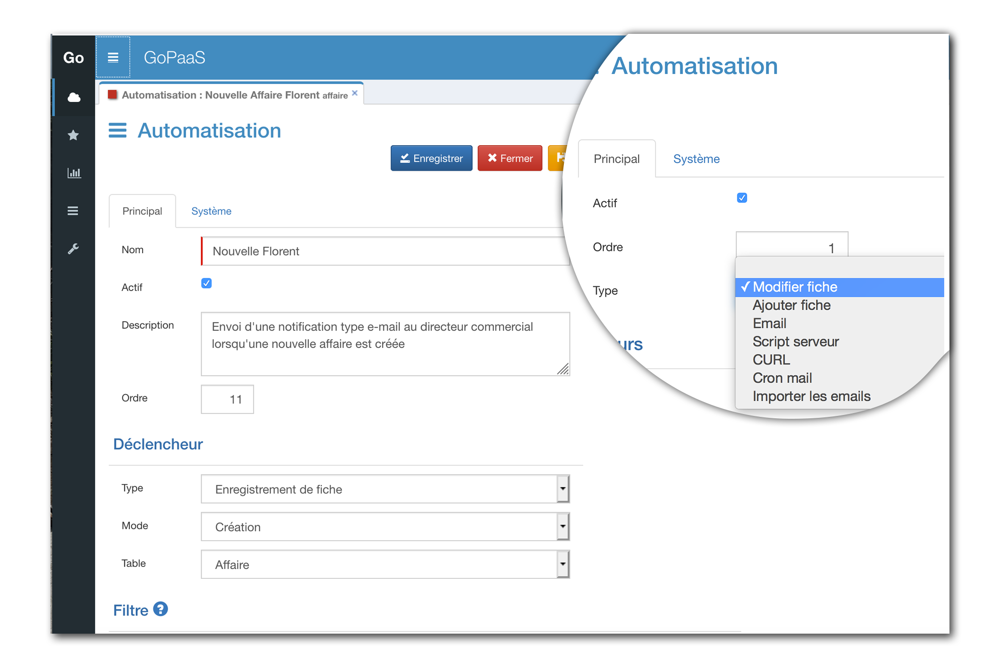Alertez votre personnel automatiquement lorsque les enregistrements sont affectés ou quand certaines tâches sont en retards. De la même manière recevez un email lorsqu'une tâche est terminée.
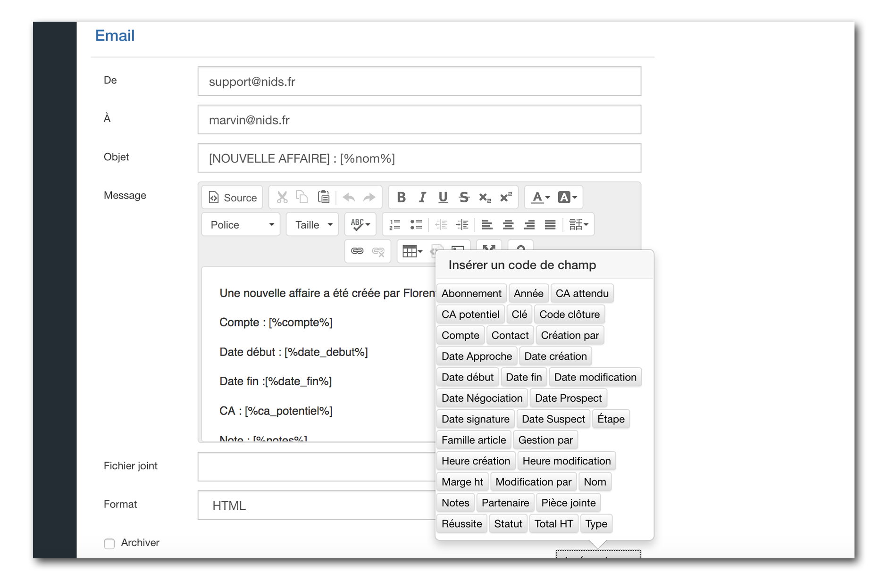Vous pouvez créer autant de groupes que vous le souhaitez , ou utilisez simplement nos groupes par défaut: Administrateur, utilisateur, invité.
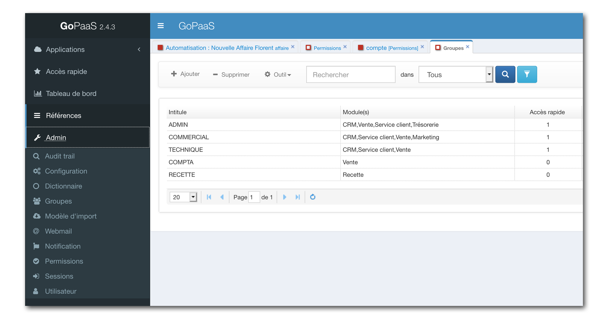Bénéficiez d'une interface claire et sécurisée certifiée https.
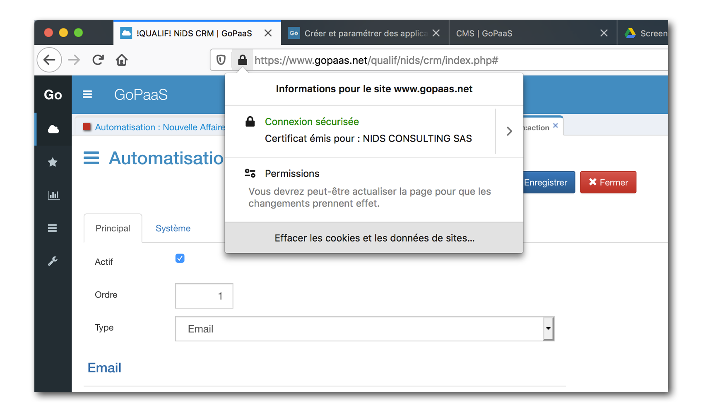Libérez la charge de travail de votre département IT, en donnant à l'utilisateur la liberté de modifier ses informations de connexion. Le mot de passe est envoyé directement à l'utilisateur par mail lors de la première connexion.
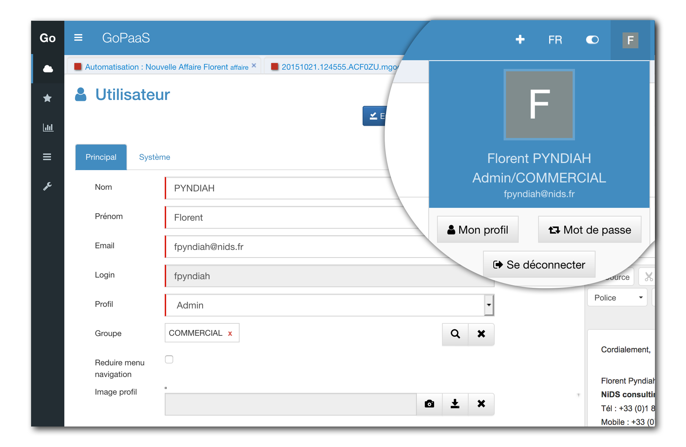Google Authenticator vous offre un deuxième niveau de sureté lorsque vous vous connectez à votre application.
Si vous configurez la validation en deux étapes, vous pourrez utiliser l'application Google Authenticator depuis un mobile Android, un iPhone ou un BlackBerry pour générer des codes. Vous recevrez ainsi un code de validation,
même si vous ne disposez pas d'une connexion Internet ou d'un service mobile.
Activez la validation en deux étapes avec GoPaaS afin de bénéficier d'une sécurité toujours plus optimale.
Vous pouvez créer autant de groupes que vous le souhaitez , ou utilisez simplement nos groupes par défaut: Administrateur, utilisateur, invité.
.png)
Pour un contrôle vraiment précis, il est possible de limiter l'accès aux fiches, aux tables et ainsi qu'aux fonctions de votre application.
Vous pouvez par exemple, laisser les membres d'un groupe accéder à toutes les fiches de l'application , mais seulement modifier certaines d'entre elles.
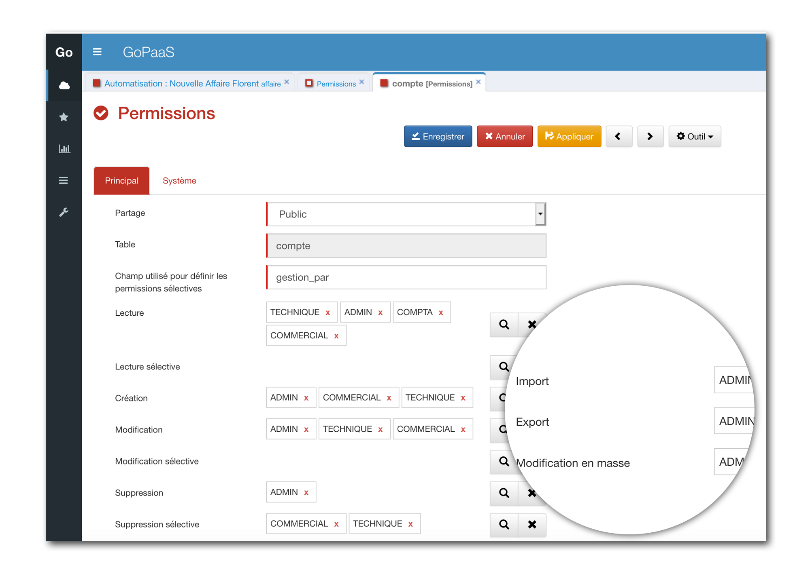Envoyez des emails transactionels avec l'intégration de Mailjet
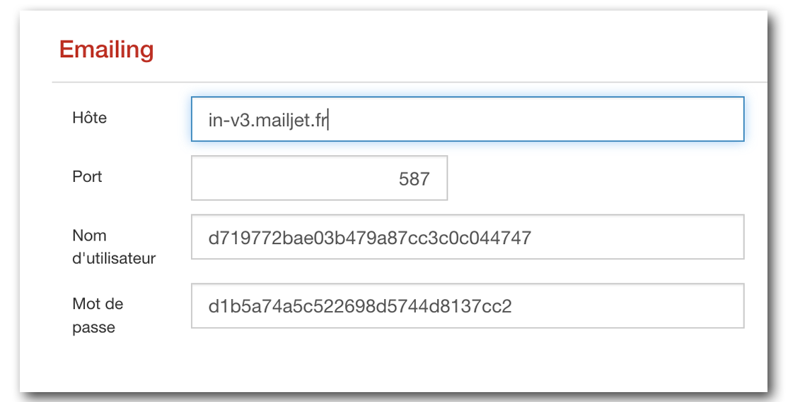Fusionnez vos données GoPaaS avec des modèles WORD personnalisés. Ajouter, supprimez et modifier vos modèles de fusion.
En savoir plus sur la fusion WORD
Envoyez des emails transactionels avec l'intégration de Mailjet